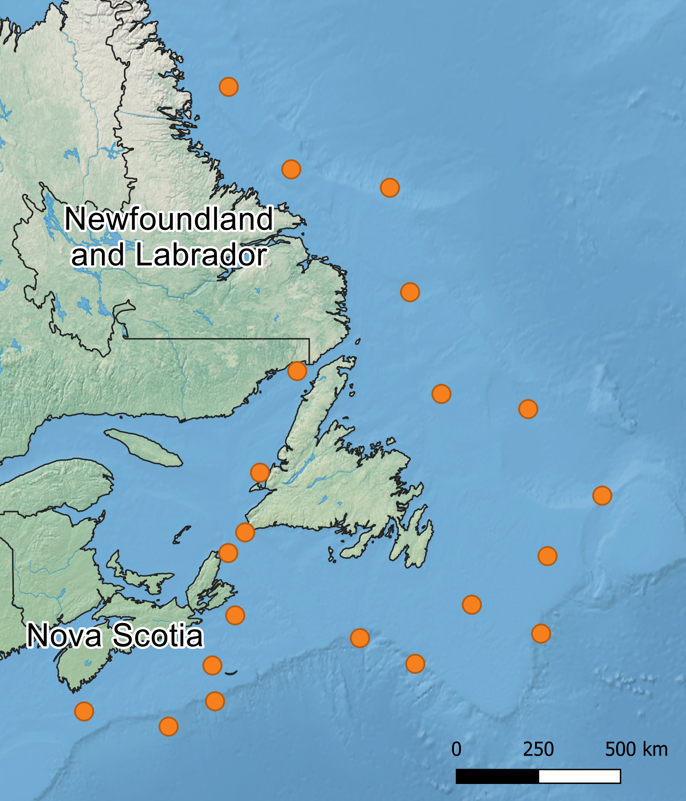
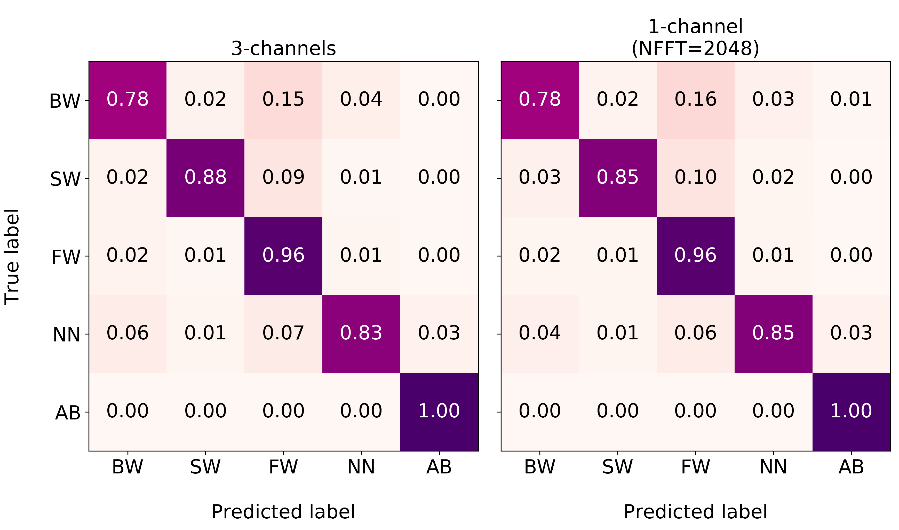
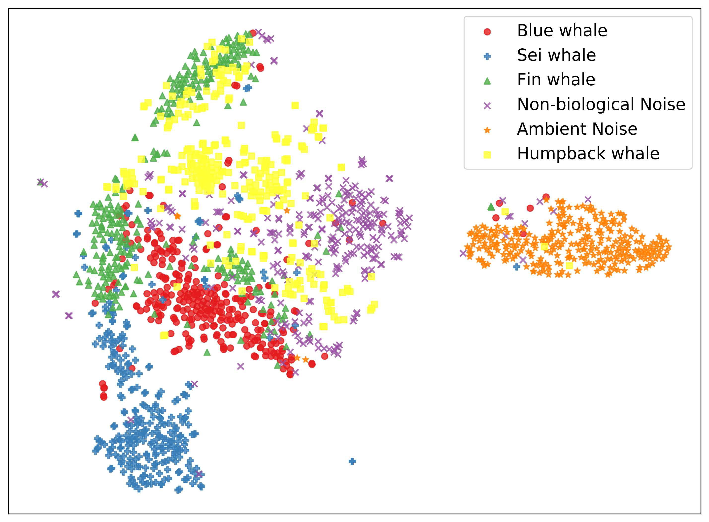

of
Canadian AI 2019 - Graduate Student Symposium
May 28, 2019
Classifying baleen whale vocalizations using convolutional neural networks and a novel acoustic representation
Mark Thomas
Dalhousie University, Halifax NS, Canada
Novel representation
-
In order to generate a spectrogram, one has to decide on a set of parameters to provide to the STFT
-
In practice, marine biologists will often use different parameters depending on the species they are interested in
-
To exploit the strategy used by experts during annotation, we employ a novel representation, by:
- Generating multiple spectrograms using different STFT parameters
- Interpolating the spectrograms such that they share the same dimensions
- Stacking the interpolated spectrograms to form a multi-channel tensor

Acoustic recordings

The acoustic recordings used in the development of our DCS were ...
-
Collected by JASCO Applied Sciences at a 8kHz sampling rate
-
Analyzed by marine biologists producing annotations in the form of bounding boxes
-
Distributions of the annotations per data set
| Source
| Training
| Validation
| Test
|
| Blue whale |
2692 |
601 |
574 |
| Fin whale |
15,118 |
3244 |
3272 |
| Sei whale |
1701 |
332 |
383 |
| Non-biological |
2078 |
449 |
398 |
Training details
- The data used in training/testing the classifiers were generated in the following way:
- Each annotation was centred within a 30 second excerpt from the original recording
- A 10 second sample containing the annotation was randomly selected from the excerpt
- A spectrogram was produced corresponding to the CNN that was being trained
-
We use the VGG-19 [3] CNN architecture implemented in PyTorch [2]
-
There were four different CNNs corresponding to the data used in training
- Three trained on spectrograms with FFT window lengths of 256, 2048, and 16384 samples
- One trained on a 3-channel version of the novel representation
-
Stochastic Gradient Descent (SGD) was used to optimize a cross-entropy loss
-
Other parameters: learning rate = 0.01, batch size = 128, training epochs = 100
Experimental results
|
NFFT |
Accuracy |
Precision |
Recall |
F-1 Score |
| 3-channels (Hz) |
- |
0.961 (±0.017) |
0.906 (±0.044) |
0.892 (±0.049) |
0.899 (±0.041) |
| 1-channel (Hz) |
256 |
0.914 (±0.024) |
0.790 (±0.048) |
0.771 (±0.070) |
0.780 (±0.053) |
| 2048 |
0.959 (±0.019) |
0.899 (±0.041) |
0.889 (±0.048) |
0.894 (±0.039) |
| 16384 |
0.951 (±0.017) |
0.871 (±0.037) |
0.878 (±0.038) |
0.875 (±0.028) |
Experimental results (cont.)

Generalization to other species
How can we test how well our CNN is able to generalize to other sources of interest?
- Transfer learning using additional instances containing humpback calls
- Freeze the feature extraction layers of the VGG-19 model from before
- Re-train the last two layers using the original training set + 2,100 humpback calls
- Hold out 450 humpback calls for validation and 450 for testing
- Limit the training to only 10 epochs using the same training details as before
Generalization to other species (cont.)
Accuracy = 0.948
Precision = 0.884
Recall = 0.871
F-1 Score = 0.877
Generalization to other species (cont.)

2-dimensional t-SNE [1] embeddings of the final frozen layer before training
Thanks to...
- JASCO Applied Sciences and the NSERC Engage program for funding this work
- Dr. Bruce Martin, Katie Kowarski, and Briand Gaudet of JASCO
- My PhD supervisor Dr. Stan Matwin for his continued encouragement and support
References
-
Visualizing data using t-SNE
L.v.d. Maaten and G. Hinton
Journal of machine learning research 9(Nov), 2579–2605 (2008)
-
Automatic differentiation in PyTorch
A. Paszke, S. Gross, S. Chintala, G. Chanan, E. Yang, Z. DeVito, Z. Lin, A. Desmaison, L. Antiga, and A. Lerer
In NIPS-W (2017)
-
Very deep convolutional networks for large-scale image recognition
K. Simonyan and A. Zisserman
arXiv preprint arXiv:1409.1556 (2014)